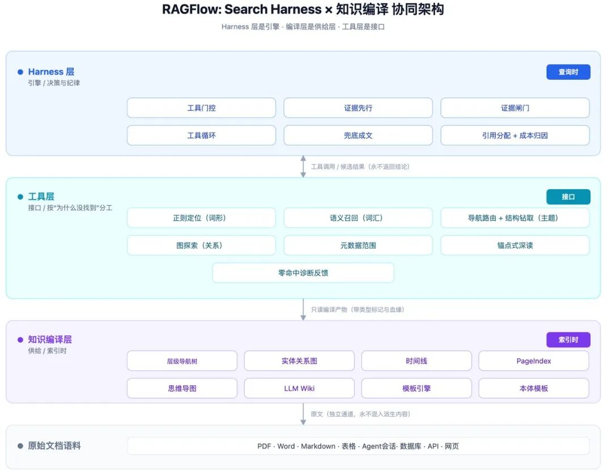

Harness 已经很准了，为什么还需要一个 Agent Native Database
来源：微信公众号 归档日期：2026-11-06 抓取状态：成功 原文字符：19475｜配图：5 张
摘要速览
- 作者张颖峰谈 RAG 走到十字路口：RAG 很好但远不够好——朴素 RAG（切块、向量化、算相似度）在生产环境频繁翻车，分块策略、Embedding 选型、相似度阈值都要大量调参且无法保证检索质量，干扰项混入上下文反扰模型；以此引出即使 Harness 已经很准，仍需要 Agent Native Database 的论证。
核心内容
（待补充）
可执行启发
（待补充）
我的想法
（待补充）
原文沉淀
目录
- 1 Grep 为什么能打败 RAG？
- 2 Harness + Grep 的局限：探索代价与 Token 成本
- 慢：每一次 Grep 都是一次 IO 操作，迭代次数线性增长导致响应时间急剧上升
- 3 更丰富的工具体系：微软 AgenticRAG 的启示
- 4 检索即 Harness：从工具到编排框架
- 1 树状导航结构：章节树与证据链叶节点
- 2 图状关联探索结构
- 3 时间线追踪结构
- 4 LLM Wiki 作为编译层的组件
- 5 模板体系：可定制、可扩展的知识编译
- 6 知识编译与 Harness 的协同
- 1 把决定权放回它该在的地方
- 2 一次提问的真实旅程
- 3 工具是“为什么没找到”的诊断表
- 4 深读：像人一样“先定位，再翻页”
- 5 引用是机械的，不是猜的
- 6 证据闸门：同一个问题，贯穿每一轮
- 1 系统整体架构
- 2 编译层：把文档编译成“可检索的知识”
- 3 执行层：精确，且互不污染
- 4 运行时：可恢复、可归因
- 5 证据闸门的接入方式
- 6 工程实现与产品定位
- 参考资料
- 作者简介
- 转发，点赞，在看，安排一下？
- 热度延续：12 月 AICon 北京站见

作者 | 张颖峰
RAG 走到了十字路口
检索增强生成（RAG）在过去两年里几乎成为了大语言模型落地企业知识场景的“标配”。它通过将外部知识库的检索与生成模型相结合，显著提升了生成内容的时效性和准确性，大幅降低了幻觉率。这个逻辑听起来无懈可击：模型不懂的就现查，查到了再回答。
但现实远比逻辑复杂。
当大量企业真正把 RAG 搬进生产环境后，一个令人沮丧的共识正在形成：RAG 很好，但远不够好。 朴素 RAG——那种“把文档切块、向量化、然后算相似度”的标准流水线——在实际场景中频频翻车。分块策略怎么定？Embedding 模型用哪个？相似度阈值设多少？每一个环节都需要大量调参，调完了依然无法保证检索质量。检索到的文本块与答案不相关，干扰项混入上下文后反而扰乱了 LLM 的推理过程。
于是有了高级 RAG，例如 RAGFlow 的 DeepDoc 解析 PDF、各类高级 Chunker、Hybrid Search、GraphRAG 的知识图谱增强、RAPTOR 的递归摘要树、Contextual Retrieval 的上下文感知分块……技术栈越来越复杂，架构图越来越好看，但效果的提升却并未匹配复杂度的增加。复杂度换不来效果。
2026 年，两个关键事件让这场讨论达到了新的高度。
第一个事件：Andrej Karpathy 抛出的“LLM Wiki”概念。他主张将原始笔记视为源材料，用 LLM 将其编译成一份持续更新、带有明确引用、可逐字阅读的 Wiki——不是每次提问时临时拼凑几个相似片段，而是“知识被编译一次，然后保持更新，而不是在每个查询上重新推导”。这个想法迅速从个人知识管理溢出到企业 RAG 领域，引发了对传统 RAG 范式的普遍质疑。
第二个事件：PwC US 的研究报告以颇为挑衅的标题发问——“Is Grep All You Need?” 研究人员为 Agent 同时配备了向量搜索和 Grep，结果发现 Grep（精确字符串匹配）常常比语义搜索提供更高的准确率。更进一步的对比实验表明，仅使用字符串匹配实现的 Agentic RAG，其质量已经与 LLM-Compiled Wiki 非常接近。
这两个事件共同指向一个结论：传统 RAG 的“查询→匹配→排序”范式正在被颠覆。检索的核心正在从“设计一个更强的召回算法”，转向“设计一套能在多工具之间动态编排的决策框架”。搜索不再是引擎，而是 Harness（驾驭框架）。
但 Harness + Grep 虽然构成了一个极强的 Baseline，却并非终点。当数据规模扩大时，完全依赖 Harness 的迭代探索和 Grep 的精确匹配，会导致 Agent 需要反复搜索才能找到答案区域——Token 消耗高、响应速度慢，且每一次新的上下文窗口都要重新经历一遍探索过程。
这正是知识编译的入场时机。本文的核心主张是：Search Harness 是 Agentic Search 的引擎；知识编译是它的上下文供给层。 知识编译不是要取代 Search/Grep，而是为 Harness 提供更丰富、更压缩、更可追溯的知识工件，让 Agent 以更少的迭代次数、更低的 Token 消耗精准定位答案。
RAG 的四重困境
要理解知识编译的价值，首先得看清 RAG 今天面临的真实困境。这些困境不是某个产品的缺陷，而是整个范式层面的结构性问题。
困境一：朴素 RAG——“搜不准”是宿命
朴素 RAG 的本质是“查询→嵌入→相似度排序”这一单一通路。面对原始文档，相似度几乎是唯一的入口。但问题是：相似不等于相关，相关不等于正确。
一个精确的日期查询（比如“2025 年 Q3 的营收是多少？”），用向量搜索只会引入大量语义相近但毫不相关的噪音。一个模糊的概念性问题（比如“什么是微服务架构的核心思想？”），用 Grep 根本找不到相关段落——因为没有人会在文档里写下那句与你查询一模一样的句子。有时答案不在某一个文档块里，而是需要先定位一批候选文档，再逐个深入精读。
单一通路无法覆盖多样化的查询类型。这是朴素 RAG 的结构性缺陷，不是靠调参能解决的。
困境二：高级 RAG——“复杂度换不来效果”
高级 RAG 试图通过引入更复杂的架构来解决上述问题。GraphRAG 用知识图谱增强检索，RAPTOR 用递归摘要树组织文档，Contextual Retrieval 用上下文感知的分块策略……每一个方案都有自己的论文、自己的 Benchmark、自己的拥趸。
但问题在于：这些方案的部署和维护成本急剧上升，效果提升却远未达到预期。 GraphRAG 将碎片化的图状结构作为检索的主来源，在消耗了大量 Token 之后，并未带来检索效果上的根本提升——仅在部分多跳问答场景下有所改善。更糟糕的是，这些复杂方案往往让系统变得难以解释、难以调试、难以维护。
一个需要专家才能调优的 RAG 系统，在真实的企业生产环境中是站不住脚的。
困境三：Agent Harness + Grep 的挑战
PwC 的研究发现，当 Agent 同时配备向量搜索和 Grep 时，Grep 常常比语义搜索提供更高的准确率。这一发现迅速在行业内被简化为一个颇具挑衅性的结论：“Grep 取代 RAG”。
但与 Vector RAG 的对比实验表明，单纯依靠 Grep 并不能在所有场景下都优于 RAG。更准确的结论应该是：一个设计良好的 Agent Harness，即使只配备 Grep 这类简单工具，也能在很多场景下达到接近甚至超越复杂 RAG 的效果。 这恰恰对“RAG 必须依赖复杂检索架构”这一假设构成了根本性挑战。
不过，Harness + Grep 虽然构成了一个极强的 Baseline，却并非终点。 当数据规模扩大时，完全依靠 Harness 的迭代探索和 Grep 的精确匹配，会导致 Agent 需要反复搜索才能找到答案区域——迭代次数线性增长，Token 消耗指数上升。这正是知识编译需要补位的地方。
困境四：RAG 的“冷启动”问题——最深层的问题
这是最深层的问题，也是 Karpathy 的“LLM Wiki”概念精准击中的痛点。
传统 RAG 的工作方式是每次查询从零开始。用户提出问题，系统向量化问题，在向量库中检索相似文档块，将检索结果拼入 Prompt，LLM 生成答案——然后一切归零。下一次查询，同样的流程再来一遍。没有积累，没有状态，没有一个可以持续演进的认知基座。
每一次查询都是一次“冷启动”。每一次，系统都要重新“理解”知识库里有什么、文档之间是什么关系、哪些来源是权威的。同样的任务对着同样的数据跑两遍，Agent 可能返回不同的答案，而且没有任何记录说明两次结果的差异来自哪里。
Pinecone 的估算指出，Agent 有 85% 的计算精力消耗在了“重新发现”的循环上，而非真正的任务完成。这不是 RAG 的 bug，这是 RAG 的范式缺陷。知识编译正是对这一缺陷的系统性回应：将部分“理解”工作从查询时移到索引时，让 Search Harness 不必每次从零开始。
Grep 的崛起与 Harness 的边界
第二章我们看到了 RAG 的四重困境，其中第三重尤为值得深思：一个简单的 Grep 工具，在 Agent 的编排下，竟然能达到接近甚至超越复杂 RAG 的效果。这一发现颠覆了行业对“检索必须依赖语义理解”的固有认知，但也引出了新的问题——Harness + Grep 的边界在哪里？本章将深入剖析 Grep 为何有效、Harness 扮演了什么角色、以及这套组合的局限性如何把我们引向知识编译。
1 Grep 为什么能打败 RAG？
“Is Grep All You Need?”这个问题的答案，远比表面看起来复杂。
PwC 的研究人员为 Agent 同时配备了向量搜索和 Grep，结果发现 Grep 常常比语义搜索提供更高的准确率。这一发现很容易被简化为“精确匹配就够了”——但真正的洞见在于论文最后的结论：检索并非简单地把知识返回给 Agent，重要的是框架——它决定了什么可以填充到上下文，以及在利用上下文之前 Agent 必须执行哪些操作。
换句话说，让 Grep 变得强大的不是工具本身，而是 Agent 如何编排它。
这使我们不得不区分两类根本不同的问题：
• 语义发现问题：答案隐藏在概念层面，需要理解语义才能找到
• 证据定位问题：答案存在于字面证据——名称、日期、文件路径、函数名、错误字符串
对于 Coding Agent 而言，大量工作恰恰属于证据定位：查找符号、追踪调用链、检查差异、阅读失败的测试用例、定位确切代码行。在这种情况下，一个精确字符串匹配工具远比语义搜索直接有效。
值得注意的是，Agent 使用 Grep 的方式与人类完全不同。OpenAI 对 GPT-5 在 BrowseComp-Plus 数据集上的搜索行为分析显示：98% 的会话中使用引号搜索（远高于人类用户），且查询长度中位数超过人类 99th 百分位。AI 在使用精确匹配时比人类更“精确”、更“结构化”——它能一次性构造出人类不太可能输入的、带多个约束的复杂查询。Grep 本身没有变，但它的用户从人类变成了 Agent，使用方式发生了质变。
2 Harness + Grep 的局限：探索代价与 Token 成本
但 Harness + Grep 虽然构成了一个极强的 Baseline，却并非终点。 原因在于：
当数据规模扩大时，完全依靠 Harness 的迭代探索和 Grep 的精确匹配，会大大增加 Harness 重复迭代探索的代价。Agent 需要反复 Grep 才能找到答案区域，导致两个严重后果：
慢：每一次 Grep 都是一次 IO 操作，迭代次数线性增长导致响应时间急剧上升
Token 消耗高：每一次迭代都将搜索结果载入上下文，多轮迭代的 Token 累积是巨大的
面对每一个新的上下文窗口，以 Harness 为中心的 Agentic 检索都会浪费调用次数，一遍又一遍地重新学习什么是有效的搜索策略。这既昂贵又缓慢。
因此，一个自然的问题浮现出来：如何在保留 Harness 编排能力的同时，缩短它的探索路径？
3 更丰富的工具体系：微软 AgenticRAG 的启示
微软在企业级 AgenticRAG（又称 Agentic Harness for Retrieval）中的设计给出了一个清晰的方向：为 Harness 配备更丰富的工具，而非仅仅依赖 Grep。
其核心架构是为企业内部数据搜索配备一个轻量级 Agent，通过迭代式搜索显著超越单次检索的结果。该架构每次迭代主要依赖三类工具：
| 工具 | 功能 | 典型场景 |
|---|---|---|
| SEARCH | 从整个知识库中发现相关文档 | 首次探索、广域搜索、验证企业术语 |
| FIND | 在单个文档中定位特定信息 | 已知目标在文档中，需精确查找指标 |
| OPEN | 从单个文档中检索带窗口的完整内容 | 需阅读文档特定区域的完整上下文 |
SEARCH 负责召回，FIND 和 OPEN 负责精读——这套工具组合将搜索行为提升为 Agent 可编排的原子操作。
微软报告其在 BRIGHT、WixQA、FinanceBench 上均取得显著提升，消融研究表明最大提升来自“从单次检索转向 Agentic 工具使用”。这印证了一个判断：Harness 不应只有 Grep 一把锤子。 SEARCH（广域召回）、FIND（精确定位）、OPEN（深度阅读）三种工具的分工，让 Agent 可以在不同层次上操作——先用 SEARCH 缩小范围，再用 FIND 精准定位，最后用 OPEN 获取完整上下文。
而进一步的研究表明，BM25 + Grep 的组合就可以让 Harness 表现更好——BM25 在单次检索中表现较弱，但在 Agent Loop 内部却强得多。这意味着我们不需要复杂的 Embedding 模型和向量数据库，仅靠词汇层面的检索工具组合，就能为 Harness 提供足够强的检索能力。
4 检索即 Harness：从工具到编排框架
基于以上分析，我们可以得出一个核心结论：Retrieval 本身就是一个 Harness 问题。
它不仅仅是“给 Agent 提供什么工具”，而是包含以下设计维度：
- 查询如何被鼓励或约束
- 结果应当如何被呈现
- 搜索返回结果是否包含足够的上下文
- 模型是否可以发出后续搜索
- Agent 何时决定它有足够的信息来回答
- Harness 如何在不同工具之间做路由和编排
换句话说，搜索不再是引擎，而是一套编排框架。 一个设计良好的 Retrieval Harness，即使只配备 BM25 和 Grep 这样的“简单”工具，也能通过迭代式编排，在大量场景下达到接近甚至超越复杂 RAG 的效果。
但如前所述，我们不能止步于此。当数据规模进一步扩大时，即使是最优的 Harness 编排，也会面临迭代次数和 Token 消耗的挑战。这就引出了下一章的主题：如何通过知识编译层，为 Harness 提供更“高质量”的工具——让每一次工具调用都能覆盖更高质量的上下文，从而减少迭代次数、降低 Token 消耗。
知识编译：为 Harness提供“高密度上下文”
第三章我们论述了 Retrieval Harness 的价值与局限：它通过编排让简单工具（BM25、Grep）发挥出惊人的效果，但在大规模数据下仍然面临探索成本过高的问题。
知识编译从另一个角度给出了答案：把知识编译的工作从查询时移到索引时。
“不是每次提问时临时拼凑几个相似片段，而是知识被编译一次，然后保持更新，而不是在每个查询上重新推导。”
这个想法迅速从个人知识管理溢出到企业 RAG 领域。向量数据库领域的先驱 Pinecone 在 2026 年发布的 Nexus 知识引擎中，引入了 Context Compiler 的概念——通过内置的 Skills（文档处理、实体抽取、文本分块等基础“函数”）自动完成知识编译操作，将用户数据加工成结构化的 Artifacts。与传统 RAG 直接对原始文档建索引不同，这里的检索对象不再是未经处理的文本碎片，而是经过预编译、富含语义和实体关系的知识工件集合。
Pinecone 的内部基准测试显示，一个原本消耗 280 万 Token 的金融分析任务，在 Nexus 上仅用了 4000 个 Token 就完成了——降幅高达 98%。虽然这一数据尚未在客户生产环境中得到广泛验证，但它指出的方向是明确的：知识编译带来的 Token 效率提升是数量级的。
在 RAGFlow 的架构中，我们对“知识编译”的定义超越了 LLM Wiki 的单一模式。知识编译包含一系列对数据——特别是大规模数据——的语义增强操作。当前实现中，知识编译的落地形态包括树状导航结构（含证据链叶节点）、图状关联探索结构、时间线追踪结构，以及本体模板。证据链不是独立的一层，而是挂在树状导航叶节点上的压缩单元；本体也不是独立引擎，而是作为知识编译的模板存在。
1 树状导航结构：章节树与证据链叶节点
为海量文档生成合适的层级标题，通过标题决定分块粒度，从而为海量数据的导航需求提供定位服务。典型场景包括：
- 单文档长文本：书籍、教材、产品手册、法律条文
- 多文档聚合：FAQ 库、政策文件集、分类文档库
树状结构让 Agent 可以像文件管理器一样“逐层展开”——从根目录到章节到小节再到具体段落——直到定位到答案所在的叶子节点。这种导航方式在用户意图不明确时尤为有效。
但在工程实践中我们也发现了一个重要事实：并非把文档组织成树状结构，就可以给 Agentic Search 带来显著收益。这跟行业很多其他类似开源项目实践得到的结论——例如仅依据文档的章节目录结构、或者通过层次化聚类形成的语义结构提供导航，就可以带来更好效果——截然相反。这些传统树状结构在设计良好的 Agent Harness 中，不仅没有带来增益，反而是负资产：Agent 仍然主要依赖 Search 和 Grep，真正让树状导航产生价值的是证据链叶节点。
当前 RAGFlow 的实现正是如此：证据链挂在树状导航的叶节点上。从原文中抽取 Claim 和 Evidence，形成可检索、可追溯的证据单元，它可以作为树状编译结构的叶节点存在：
• 树状结构负责组织：提供章节、小节、段落层级的导航骨架。
• 证据链叶节点负责压缩：Agent 沿树导航到叶节点后，拿到的是证据链，而不是整段原文。
• 两者合起来，构成当前验证最有效的知识编译落地形态。
证据链叶节点的价值非常明确：
命中时大幅节约 Token，未命中时损失极小。 证据链进入上下文有两条路径。第一条是经专用工具读取，例如沿导航树钻取到叶节点、图探索、元数据范围选择。第二条是直接作为上下文填充物：在 Agent Harness 读取原始 Chunk 之前，先读取对应的 Claim/Evidence；如果判定证据与问题一致，就直接用证据作答，不再读取 Chunk。第二条路径把 Token 压缩点提前到了 Chunk 读取之前，是本架构中最省 Token 的路径。
统一口径下，编译产物命中时，单个问题可以节省 Token 90% 以上；没有命中也只损失 2% 左右。我们在较大的多跳数据集 FRAMES Benchmark 上，知识编译的证据链平均 Token 节约在 30 - 40% 以上。命中与未命中之间的巨大不对称，正是证据链值得预先编译的经济学基础：大多数问题命中时收益极高，少数未命中时成本极低。
构造不需要很好的模型。 证据链抽取不需要强模型，小模型即可完成。这有助于降低索引成本，让大规模数据编译变得经济可行。
可追溯、可审计。 每条 Claim 都绑定 Evidence，答案来源清晰，便于企业场景审计。
不取代 Search/Grep。 Search/Grep 仍然负责找到候选区域；树状导航与证据链叶节点负责让 Harness 在定位后“省着用”上下文。
因此，树状导航的价值不在单点召回，而在组织与承载。承载证据链叶节点后，Token 效率显著提升。
2 图状关联探索结构
以自定义实体为中心的图状结构，实体之间的关联规则（即图的边）也由用户定义。典型场景包括：
- 跨章节引用频繁的技术文档（如“详见 3.2 节”）
- 需要层层深入理解的复杂教材
- 包含大量实体定义和交叉引用的专业文档（法律、医学、工程规范等）
这套自定义模板不同于过去将碎片化图结构作为检索主来源的 GraphRAG 做法。后者在消耗大量 Token 之后，并未带来检索效果上的根本提升——仅在部分多跳问答场景下有所改善。而 RAGFlow 的新图结构，其实体抽取和实体关系定义都更加灵活，并且这些图结构能与树状导航结构完全关联，实现对同一内容区域的另类覆盖。
图状结构是知识编译从“文档组织”走向“关系推理”的下一步。它与树状导航共享同一套编译产物，让同一份知识既可按层级导航，也可按关系探索——这是知识编译体系持续扩展的方向。
3 时间线追踪结构
为持续更新的文档集（如项目文档、会议纪要、变更日志）建立时间线索引，让 Agent 可以按时间维度筛选和定位信息。典型场景包括：“上个月的产品需求文档更新了什么？”“这个 Bug 是什么时候引入的？”
4 LLM Wiki 作为编译层的组件
广受关注的 LLM Wiki 模式，在我们的架构中被定位为图状结构之上的可选合成层——由用户选择是否基于图结构进一步合成新的内容。
与各类 LLM Wiki 实现相比，RAGFlow 的方案更贴合企业级需求，是真正意义上的 Enterprise Context Layer（企业上下文层）：** **
- 全流程可自定义：抽取阶段的实体和图结构可自定义；生成过程可定制，实体→Concept→Claim 各阶段均可按需配置；生成结果的格式可定制，内置系列模板，企业可根据自身需求不断扩充**
**
- 可持续编译与版本化管理：企业可以以 Wiki 为中心持续构建自己的领域模板，形成内部可共享、持续维护的知识共享体系**
**
- Wiki 是编译层的组件，而非替代品：企业可以根据自身数据量和 Token 预算选择是否生成 Wiki。它并不是 Harness 的唯一入口，而是搭配原始数据提供答案的组合工具之一
5 模板体系：可定制、可扩展的知识编译
知识编译不是一组固定的内置能力，而是一个可定制、可扩展的模板体系。
编译由模板驱动。模板规定抽取什么、输出哪些字段、字段是什么类型、遵守哪些约束、以什么格式呈现、合成阶段用什么示例提示。内置模板提供基线，覆盖树状导航、图状探索、时间线、LLM Wiki、本体等形态。用户模板允许企业按领域定制，不修改引擎代码就能扩充编译能力。
模板体系的扩展性体现在三个层面。第一，编译形态可扩展：新增一种编译产物，只需新增一个模板，不需要新增一条引擎分支。第二，抽取规则可扩展：同一份文档可以按不同模板抽取不同粒度的命题、不同定义的实体关系。第三，输出格式可扩展：综述式段落、结构化字段、逐字引文等不同呈现形态，由模板配置决定。
Memory 模板是一个典型例子。会话数据与企业文档不同，它不是按章节组织，而是按 session_id 聚合。新增一个 Memory 模板，可以按 session_id 聚合会话数据，抽取事实和证据，生成与文档证据链同构的编译产出物，作为真正的 Memory 选项。Harness 在需要回忆历史会话时，可以像读取文档证据一样读取记忆证据——同一套工具、同一套引用编号、同一套证据闸门。这类扩展在当前知识编译框架内以模板为单位完成，不需要改动 Harness 或工具层。
本体模板是另一个例子。本体在这里的定位很明确：它是知识编译的一种模板，用来给检索提供语义骨架。业务人员配置好本体建模 TBox（概念、关系、属性、约束），知识编译据此生成对应的本体断言 ABox。ABox 断言作为知识工件，和证据链一样携带逐字证据与血缘。它可以独立搜索——断言本身作为检索对象，支撑概念、实体、关系的直接查找；也可以增强搜索——Harness 在规划阶段识别查询涉及的本体域，用断言扩展同义词、上下位关系、关联实体，提升召回覆盖；还可以约束搜索——限定实体类型、关系路径、属性范围，减少无关结果混入上下文。和树状、图状、时间线一样，本体不取代 Search/Grep，而是为 Search/Grep 提供编译期注入的先验知识，让 Harness 在检索时知道“该在什么范围内找、该找什么类型的东西”。
编译能力的扩展以配置为单位，不以引擎分支为单位。这是知识编译能够持续演进、能够覆盖企业多样化数据形态的前提。
6 知识编译与 Harness 的协同
回顾第三章的结论：Retrieval Harness 通过编排让简单工具发挥出强大的效果，但在大规模数据下迭代成本过高。现在可以清晰地看到知识编译如何补上这一环。：
知识编译为 Harness 提供了“高密度”的工具——不是让 Harness 多一次搜索，而是让 Harness 每一次工具调用都能获得更大的信息量。一个树状导航工具的一次展开，可能相当于多次 Grep 搜索的覆盖范围；一个图状探索工具的一次跳转，可能相当于多轮向量检索的关联推理。
这使得 Agent 的探索路径被大幅缩短。它不是取代 Harness，而是武装 Harness——用编译好的结构，替代盲目搜索。
知识编译让 Harness 不再需要“从零开始”探索每一个新的上下文窗口。 编译一次，多次受益——这正是 “上下文即基础设施” 这一理念的工程化落地。
Retrieval Harness：有状态的迭代检索
传统 RAG 把检索当成一次函数调用：查一次，拿回若干片段，交给模型。多跳、多文档问题把这条路走断了。于是有了 Agentic RAG——检索变成一段过程：搜索、阅读、再搜索。
但“过程”本身不是答案。没有纪律的循环会退化成盲目探索：反复改写同一组关键词，反复读同一篇文档，把几十段无关证据堆进上下文，最后靠模型的耐心赌一个答案。
RAGFlow 的 Retrieval Harness 就是为这段过程立的纪律。这一版我们做了一次减法：去掉按延迟、新鲜度、查询类型分流的多路路由器，只留下一条循环——但把“谁来决定”重新划分清楚。
1 把决定权放回它该在的地方
一条循环里有三类决定，性质完全不同：** **
- 框架必须保证的事：这一轮开始前先取回已编译的证据，判断够不够回答；不够就丢掉，而不是塞进上下文；工具在这份语料上被证明无用，就摘掉；模型调用不稳时按预算重试或降级；引用编号在证据送达那一刻分配。**
**
- 模型擅长的事：用什么词去搜、先读哪篇文档、这段内容是否相关。**
**
- 检索引擎该做的事：正则匹配、排序、过滤，精确执行，而不是让模型用自然语言模拟。
结论是：不追求“让模型自由选择工具”，而追求进入上下文的证据，是此刻最小的充分集合。模型只需回答“我还缺什么”，框架保证它不会因为缺某类证据就在错误证据上强行作答。
2 一次提问的真实旅程
第一站：确认这份语料值不值得用结构化方式查。 如果数据集从未做过知识编译，导航、图探索这类工具根本不会出现在模型面前——连工具说明都不发。没有编译过的语料，不为它用不上的能力付一分钱。
第二站：证据先行。 在模型思考怎么搜之前，框架先做一次跨整个语料库的证据召回，直接取回编译好的原子命题——每条自带对原文的逐字引用。这是一次扁平读取，不做文档路由：导航树对问题的路由是有偏的，一个小树会把每个问题都导向同一两篇文档，预取就退化成背景噪音。
第三站：二选一。 证据足够（数量够、来源够分散），一次模型调用直接成文，整轮不读一段原文；证据不足，整块丢弃——不写进系统提示（会被循环里每次模型调用重复计费），也不分配引用编号（模型从没见过它）。默认做法是“检索到什么就先塞进上下文”，这里反其道而行：证据不够时，把先拿到的证据丢掉，让循环在干净上下文里继续。没有被污染的上下文，模型才有机会真正检索到决定性事实。
第四站：带着工具的循环。 同一轮多个检索动作并行执行；工具报错不中断整轮，而是变成模型能读懂的一条结果——一次写坏的正则，不该让整轮检索就此结束。循环有步数上限和整轮时间预算，双重收敛。
第五站：确定收尾。 循环异常结束（模型只留旁白、或超时）时，框架还有保底路径：用问题和已到手的证据合成一个真正的答案。问一次问题，不该得到一句“让我再查一下”。
3 工具是“为什么没找到”的诊断表
市面上的 Agentic 检索，工具列表通常差不多：一个向量搜索、一个全文搜索，最多补一个网页搜索。RAGFlow 的编排不同——工具按“这一轮为什么没找到”来分工：
- 记得住措辞，只是词形不对（拼写、派生、单复数）：走正则定位，一条正则一次扫过整库。
- 记得住意思，但不知道语料怎么说：走纯语义召回，必须真正“脱离词汇”——关键词还留在查询里当过滤器，语义搜索就只是自我设限。
- 只知道主题，不知道该读哪篇：沿编译好的导航树路由到文档，再钻进该文档的编译结构，直接取回带逐字引文的命题。
- 问题关系型（谁和谁相连、A 与 B 什么关系）：沿实体关系做子图探索，一次看完整篇文档的实体—关系骨架。
- 只想先圈定范围（哪些文档符合条件）：元数据选择器只返回文档，不碰正文；这个“文档范围”句柄可在后续所有检索动作之间传递，让工具形成组合，而不是一串独立调用。
最见功力的是零命中怎么解释。词法检索零命中，不代表语料里没有这件事，而是意味着“你的说法不是语料的说法”——这两个结论对应完全相反的下一步。所以结果返回的那一刻，工具就把判断和下一步直接告诉模型：换一次语义描述，或换一类事物去描述。反馈写在证据返回的那一刻，而不是写在系统提示里等模型自己想起来。
4 深读：像人一样“先定位，再翻页”
检索返回的片段只能用来定位，不能用来作证——一段被截断的窗口，很可能正好切掉了答案所在的那句话。
所以真正的阅读被设计成锚点式：从刚才看到的内容里点名要读哪几段，系统先取回整篇文档的阅读顺序索引，再按点名精确取回全文。前后可各扩几段，重叠窗口自动合并；每次都会告诉你这篇文档共有多少段、你读到了哪里、还差多少——长文档可以像人一样一页页读下去。
片段和全文的边界也从不含糊：任何被截断、或根本没命中所查关键词的片段，都会被明确标注“这只是一段窗口”，不允许被当作证据直接引用。
进入深读之前，Harness 会先检查该文档的 Claim/Evidence 是否已覆盖问题；覆盖则不进入深读，直接以证据作答。这是证据链作为“Chunk 前过滤”的另一个落点。
5 引用是机械的，不是猜的
一份可交付的答案，必须能追溯到确切的那一段话。
RAGFlow 在这件事上不做概率。证据在送达模型的那一刻就获得编号，同一个片段在整个会话里始终是同一个号；答案里的引用标记，最终被逐一解析回真实片段。模型不可能引用一段它没读过的内容——编号是服务时分配的，不是事后用相似度反推的。
靠提示词叮嘱模型“别瞎编引用”、再靠向量相似度反推句子来源的做法，本质上还是在赌概率。这里没有赌。
6 证据闸门：同一个问题，贯穿每一轮
到这里，Harness 的纪律可以收束成一条原则：进入上下文的证据，必须是此刻最小的充分集合。 而 Harness 还利用 Jev 类决策模型把判断模型化。它不做 rerank，不解决“怎么排序”，而是回答一个更靠前的问题：这批证据，现在有必要发给大模型吗？ 够，就放行，一次成文；不够，就拦下，让循环继续找。它的价值不在“发得更好”，而在“决定不发”——把 Token 降在渲染之前，而不是等塞进上下文再靠摘要压缩。
“决定不发”还有一个对称面：决定不读。在深读之前，先用 Claim/Evidence 判断是否已经足以作答；足以作答就不读 Chunk。发与读两个决策合起来，才是 Token 压缩的完整闭环。
实现架构
1 系统整体架构
RAGFlow 的统一知识编译层与 Retrieval Harness 协同架构如下：

这张图对应全文主线：Harness 层是引擎，编译层是供给层，工具层是两者之间的接口。 证据闸门落在 Harness 层，判断对象来自工具层返回的候选与编译层提供的结构。
2 编译层：把文档编译成“可检索的知识”
编译不是给文档做摘要，而是把同一份原文翻译成几种不同维度的结构：层级导航、实体关系、时间线、思维导图、页码索引、Wiki，以及最关键的原子命题——一句话的事实，配一段必须是原文连续子串的逐字引用。
三种结构对应三种提问方式：知道主题的走导航，关心关系的走图，需要精确事实的走命题。命题之所以能被直接引用，是因为它自带证据，而不是因为它被压缩过。
编译由模板驱动：内置模板提供基线，用户可为自己的领域定制抽取什么、输出哪些字段、遵循哪些规则。每条产物携带血缘（来自哪些文档、哪些段落），文档被删除时相关贡献被精确摘除；重建是幂等的整体重算——宁可重算，也不留半新半旧的结构。本体也落在这一层，作为模板之一：配置 TBox，编译生成 ABox 断言，既可独立搜索，也可在 Harness 中增强和约束 Search/Grep。
3 执行层：精确，且互不污染
正则和排序下推到引擎内部执行，而不是取回一堆结果在内存里过滤；深读的“读索引”和“取全文”共用同一套阅读顺序，两段式读取不会错位。
原文通道和派生内容通道严格隔离：面向模型阅读的正文检索，永远排除编译产物；编译结构只通过编译工具进入上下文。派生知识不冒充原文，原文也不被结构淹没——这是供给层与 Harness 协同的前提。
4 运行时：可恢复、可归因
会话是一份事件日志，失败的一轮会被回滚，不会把“有调用、没结果”的残骸带到下一轮。跨轮持久化只保留每一轮的最终答案，不保留取证轨迹——长对话成本不会随轮次线性爆炸。
韧性是设计的一部分：限流、过载、网络抖动按退避重试，客户端错误快速失败，对话级别有故障转移链；兜底成文的模型与检索用模型分开实例，避免一次故障连带把答案吞掉。
上下文可审计：每条真正进入模型的证据都有记录（命中了哪些词、是否被截断、原文多大），每轮成本按阶段归因（取证、证据直答、汇总）。回答错了时，我们能分清是“没找到”还是“找到了没用上”——这两种问题需要完全相反的修法。
5 证据闸门的接入方式
证据闸门落在工具结果渲染与提示词组装之间，不改变任何工具的调用契约——工具返回的始终是候选，不是结论。三处必经：证据召回的充分性判断、循环中每一轮的证据准入、成文前的证据裁剪。
接入方式是渐进式的：先影子比对（闸门判定与现有阈值并行记录、不影响线上结果），再按环节逐个替换。原因不是保守，而是证据闸门的价值必须用“省了多少 Token、有没有把该发的证据拦掉”来验证，而不是用“模型觉得它好不好”来验证。
这套 Harness 的先进之处，不在循环更长，而在三件事：决定权分层——框架保证不能被委托的事，模型只做真正擅长的语义判断；证据最小充分集——能直接回答就不读原文，不够就整块丢弃，而不是用无关证据填满上下文；引用与成本的机械性——编号在证据送达时产生，成本按阶段可见，证据闸门把“要不要发”从经验阈值变成可判定、可审计、贯穿全程的决策。
6 工程实现与产品定位
上述知识编译层、工具层与 Retrieval Harness，已随 RAGFlow 首个 1.0 正式版面向广大开发者公开。
RAGFlow 1.0 完全用静态编译型语言 Go 重写了此前的 Python 版本。重写带来的不只是性能提升，更重要的是稳定性与可扩展性：编译层的并发编译、工具层的并行调用、Harness 的长会话状态管理，在静态类型与原生并发模型下更可控，长期运行的资源占用与故障边界更清晰。
伴随 1.0 的发布，RAGFlow 的定位也从端到端 RAG 引擎升级为 Agent Native 数据库。它不再只是一个“给模型喂片段”的检索后端，而是 Agent Harness 可以直接调用的上下文供给层：不论 Harness 需要的是原文片段、编译后的证据单元、导航结构、关系骨架还是记忆事实，都可以从 RAGFlow 获取。Harness 负责编排，RAGFlow 负责供给——这正是本文反复强调的分工。
结论与展望
本文的主线可以用一句话概括：Search Harness 负责找到，知识编译负责省着用。
沿着这条主线，第二章揭示了 RAG 的四重困境；第三章剖析了 Grep 为何在 Agent 手中如此强大、Harness 作为编排框架的核心作用，以及这套组合在大规模数据下的根本局限；第四章论证了知识编译如何系统性地回应这些局限——通过树状导航（含证据链叶节点）、图状关联探索、时间线追踪、LLM Wiki、本体模板、Memory 模板等形态，为 Harness 提供“高密度”的上下文供给，并以模板体系支撑持续扩展；第五章说明了 Retrieval Harness 如何以 Search/Grep 为中心、知识编译为供给层；第六章给出了实现架构与产品落地。
我们的核心主张是：
- Search Harness 是 Agentic Search 的引擎。 检索的核心正在从“设计更强的召回算法”，转向“设计能在多工具之间动态编排的决策框架”。**
**
- 知识编译是 Harness 的上下文供给层。 知识编译包含树状导航、图状探索、时间线、LLM Wiki、本体、Memory 等多种形态，且是一个可定制、可扩展的模板体系。当前验证最有效的是证据链——平坦结构，可作树状叶节点。编译产物命中时，单个问题节省 Token 90% 以上；没有命中也只损失 2% 左右；在 FRAMES 多跳数据集上，证据链平均 Token 节约 30% 以上。**
**
- 知识编译不取代 Search/Grep。 Agentic Search 的本质仍是强 Search/Grep + Harness。知识编译的价值在于压缩上下文、降低 Token、提升可追溯性。
行业趋势也印证了这一判断。VentureBeat 在 2026 年 5 月的分析中指出：“RAG-to-vector database pipeline 已经不够用了；Agentic AI 需要一种不同的方法来整合上下文。”Pinecone 的 CEO Ash Ashutosh 说得更直白：“RAG 是为人类用户打造的，Nexus 是为 Agent 用户打造的——因为他们的语言完全不同，他们期望的响应完全不同，分配给 Agent 的任务也与聊天机器人完全不同。”这些判断指向同一个方向：上下文不再是一次性拼装的 Prompt 片段，而是需要被编译、维护和复用的基础设施。
知识编译正在改变人与组织运用知识的根本范式。从简单 RAG 到知识编译，从“每次查询重新推导”到“编译一次、多次受益”，这不仅是技术架构的演进，更是对“上下文”这一概念的重新定义——上下文即基础设施。
随着知识编译与 Agentic Retrieval 的结合日益成熟，企业上下文层的构建将很快走向民主化：越来越多的企业会把内部数据注入这一层，形成专有的、可演化的业务认知体系。沿着这个方向，RAGFlow 将继续扩展知识编译的输入形态，深化与外部 Harness 框架的集成，并持续开源知识编译层实现——让证据链、本体模板、Memory 模板成为可复用的工程标准，而不是私有架构。
RAG 的十字路口，不是“要不要检索”的十字路口，而是“检索如何被编排、上下文如何被供给”的十字路口。Search Harness 负责找到，知识编译负责省着用。编译一次，多次受益——这就是 Agentic 时代上下文基础设施的起点。而 RAGFlow 1.0 正在把它变成开源现实：一个用 Go 重写的、可扩展的 Agent Native 数据库。
参考资料
[1] Agentic search - retrieval, harness, or model? https://softwaredoug.com/blog/2026/06/08/three-kinds-of-agentic-search
[2] Is Grep All You Need? How Agent Harnesses Reshape Agentic Search. arXiv:2605.15184
[3] Vector RAG vs LLM-Compiled Wiki: A Preregistered Comparison on a Small Multi-Domain Research. arXiv:2605.18490
[4] AgenticRAG: Agentic Retrieval for Enterprise Knowledge Bases. arXiv:2605.05538
[5] Rethinking Agentic RAG: Toward LLM-Driven Logical Retrieval Beyond Embeddings. arXiv:2605.27123v1
[6] The Enterprise Context Layer, Andy Chen. https://andychen32.substack.com/p/the-enterprise-context-layer
[7] Pinecone Nexus Knowledge Engine. https://www.pinecone.io/blog/introducing-nexus-knowledge-engine/
[8] The RAG era is ending for agentic AI — a new compilation-stage knowledge layer is what comes next. VentureBeat, 2026.
作者简介
张颖峰，资深技术创业者，现为领先开源项目 RAGFlow 的联合创始人。RAGFlow 是一款广受欢迎的企业级 RAG 引擎，在其主导下于 GitHub 已收获 9 万星标，成为业界在知识检索与 Agent 开发领域广泛采用的开源解决方案。其本人拥有多年基础设施与人工智能核心算法的研发经验，曾支撑过亿级用户规模的业务系统，致力于通过扎实的技术产品推动企业实现智能化升级。
声明：本文为作者投稿，不代表平台观点，也不构成投资建议，未经许可禁止转载。
END
转发，点赞，在看，安排一下？
今日好文推荐
Linux内核也能造了？Codex 11天写出13.9万行新内核，Rocky Linux 10跑起来了
从写一行代码到帮一家企业运转：腾讯 Agent 这一年的“野心”与边界
框架选不对，Claude 开发成本多一倍：前端十年框架膨胀，终于有人买单了
热度延续：12 月 AICon 北京站见
12 月 18–19 日，AICon 全球人工智能开发与应用大会将在北京举办。本届大会以探索 A 应用边界为主题，设置 13 大技术专题，覆盖大模型后训练、推理优化、Agent 工程、知识工程、智能体评测与安全、自进化系统、AI 软件交付、原生架构及组织变革等核心方向，汇聚一线技术专家，深入分享 AI 技术突破与企业规模化落地的真实实践。
归属：[[02-输入/按主题/AI与效率/_index|AI与效率]]